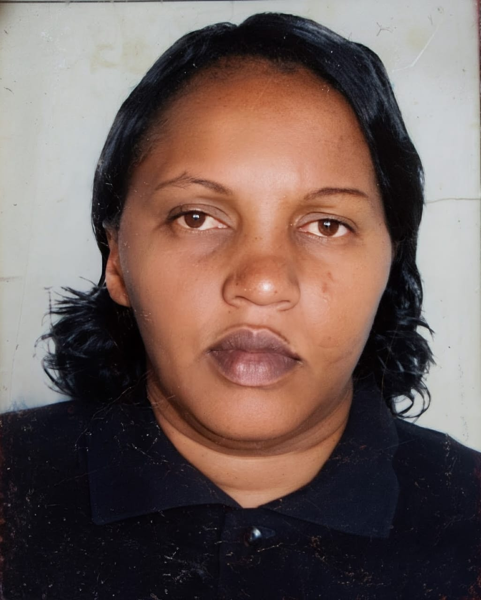
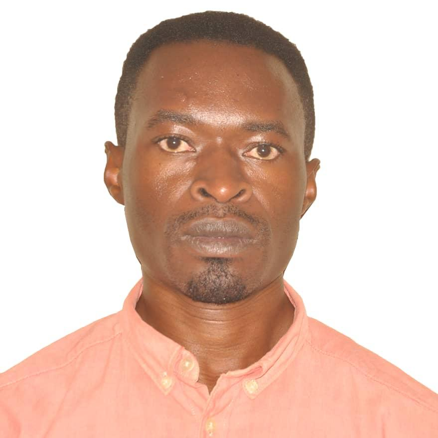
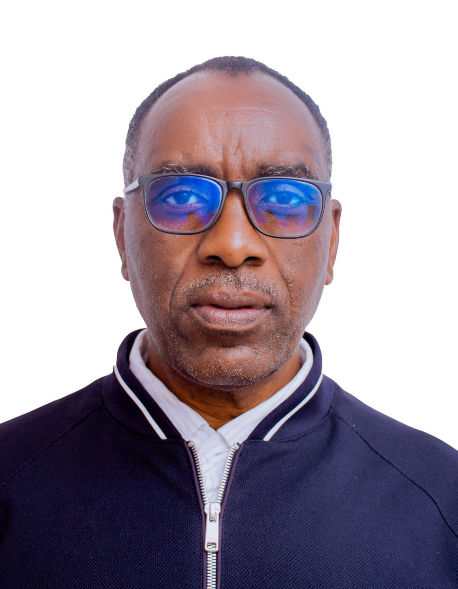
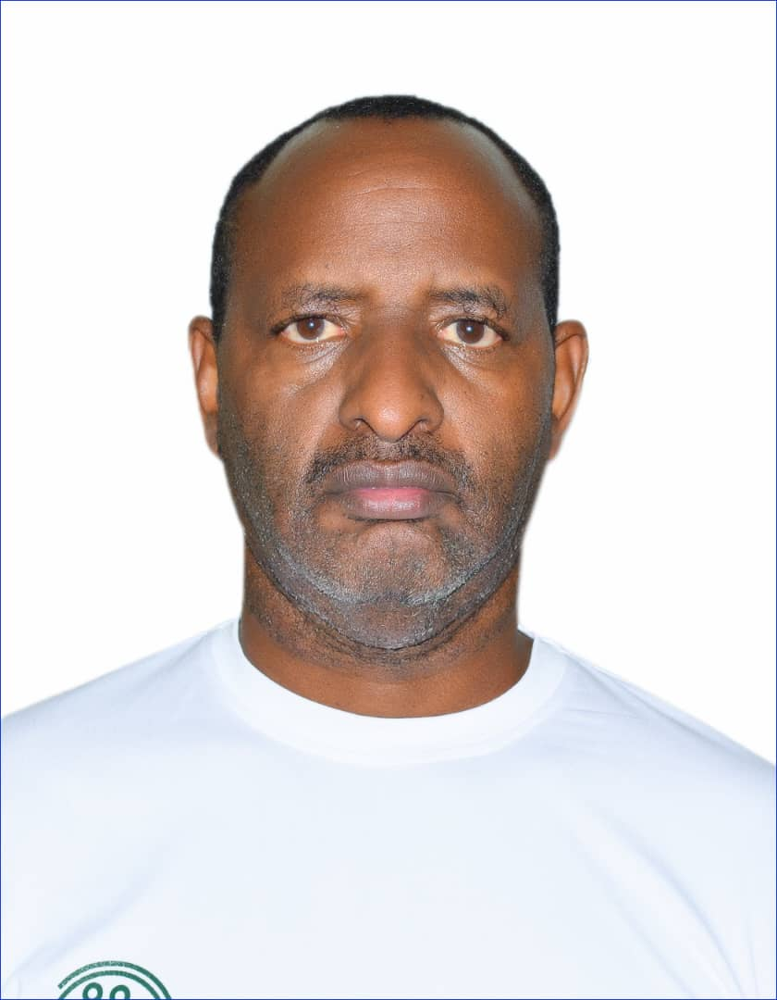
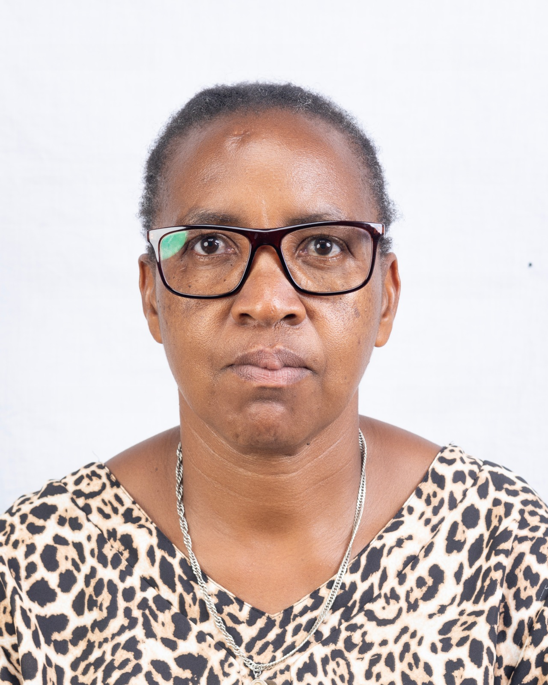

Stroke Action Rwanda (SAR) is a non-profit, non-government organization, registered with Rwanda Governance Board (RGB) with legal personality certificate. Sar is committed to reducing stroke occurrence, disability, and socioeconomic impact through evidence-based prevention and control strategies, promotion of timely access to acute care, structured rehabilitation, and community interventions including rehabilitation and long-term support.
We serve all people with a focus on individuals at high risk of stroke, stroke survivors, family caregivers, health professionals, policymakers, and communities across Rwanda, with particular attention to raising awareness and prevention, early recognition, emergency response, and post-stroke care services.
To reduce the incidence, recurrence, , and long-term disability associated with stroke in Rwanda through integrated prevention, advocacy for equitable access to acute stroke treatment, structured -rehabilitation, caregiver support, and health system strengthening.
A Rwanda free of severe stroke, where stroke prevention is prioritized within national NCD strategies, where acute stroke care is accessible, where multidisciplinary rehabilitation services are available across the continuum of care, and where every person affected by a stroke receives comprehensive long-term support.
We are committed to delivering and advocating for interventions grounded in the best available scientific evidence. All programs and services are aligned with validated clinical guidelines, recognized public health frameworks, and context-appropriate best practices across the stroke continuum of care—prevention, acute care, rehabilitation, and long-term support. Decision-making integrates three complementary pillars: Rigorous and current scientific evidence Clinical expertise and professional standards Lived experience of stroke survivors and caregivers We systematically review emerging evidence, monitor performance indicators, and adapt implementation to ensure effectiveness, quality, safety, and measurable impact.
We place individuals, families, and communities at the center of all policies, programs, and services. Our approach prioritizes dignity, autonomy, cultural responsiveness, and continuity of care across the stroke pathway. We actively address disparities in access and outcomes by promoting equitable access to prevention, emergency response, treatment, rehabilitation, and long-term support—particularly for underserved, rural, low-income, and vulnerable populations. Equity is embedded in program design, resource allocation, partnerships, and performance measurement to ensure that no population is excluded and that measurable gaps in access and outcomes are reduced over time.
We institutionalize the meaningful engagement of individuals with lived experience of stroke throughout the full program cycle. Survivors, caregivers, and community representatives contribute to:
• Priority setting and program design
• Implementation planning and delivery
• Monitoring, evaluation, and learning
• Policy development and advocacy
Engagement mechanisms are structured, inclusive, and sustained to ensure participation is substantive and influential. Programs are co-created and adapted to local context to maximize relevance, acceptability, equity, and effectiveness.
We strengthen community and health system capacity through education, awareness, workforce development, and multi-sectoral collaboration. Our initiatives promote sustainable improvements in stroke literacy, early recognition and referral, rehabilitation access, and long-term support systems. Progress is tracked through defined indicators aligned with national health priorities and our strategic objectives.
We operate with robust governance structures, clearly defined roles and responsibilities, measurable objectives, and transparent reporting systems. We ensure responsible stewardship of financial, human, and institutional resources; compliance with legal and ethical standards; and continuous performance monitoring against strategic targets. Accountability extends to beneficiaries, partners, donors, regulators, and the public, reinforcing trust, integrity, and organizational credibility.




